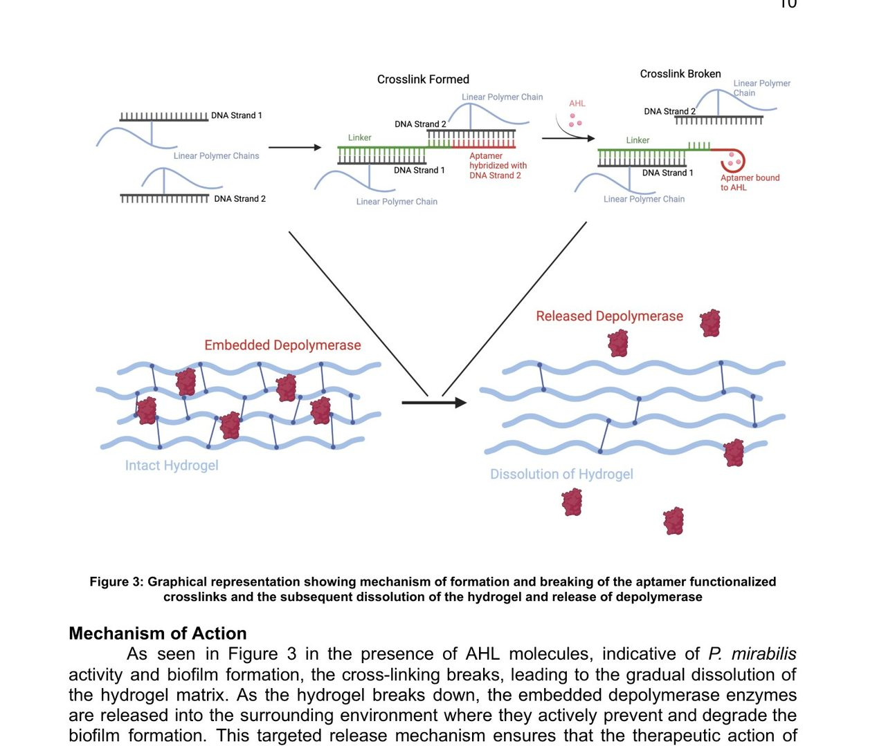
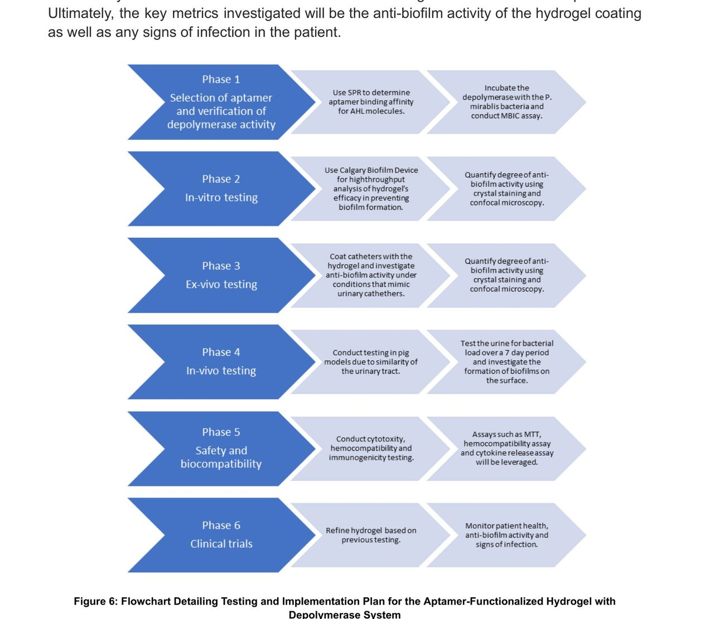

Home Featured work Catheter coating
03 · Device strategy · Commercialization
A catheter coating designed around who pays for the infection
Catheter-associated urinary tract infections are about 30% of all healthcare-associated infections, and Medicare has not reimbursed the preventable ones since 2008. That rule decides who pays for prevention, so we started there and worked back to a specification, a regulatory path and a six-phase test plan. Nothing was built; every performance number here is a target.
- Timeline
- Sep – Dec 2024
- Context
- BME405L design, Duke
- Team
- 5 students (Team Ubiqure)
- My role
- One of five. The proposal does not break out individual contributions
- Methods
- Market sizing, competitive benchmarking, SWOT, patent landscape, regulatory classification, test plan design
- Deliverable
- A design proposal for a hydrogel catheter coating that releases a biofilm-degrading enzyme only when it detects the bacteria, with every design criterion set from a cited market or clinical number. Proposed, not built.
The problem
About 20% of hospitalized patients get a urinary catheter, and roughly 75% of hospital-acquired urinary tract infections are catheter-related. In nursing homes, where catheters stay in longer, half of catheterized residents develop a symptomatic infection. Direct mortality is low, but the downstream is not: these are the second leading cause of secondary bloodstream infections, the resulting bacteremias carry around 10% mortality, and pyelonephritis accounts for about 100,000 US hospitalizations a year.
The commercial shape of this problem is unusually clean, which is what made it interesting to work on. There are roughly 449,334 CAUTI cases a year in the US. Each costs a facility between $876 and $10,197. And because CMS stopped reimbursing preventable CAUTIs in 2008, that cost sits with the hospital rather than the payer. The urinary catheter market was $4.18 billion in 2022 and is projected to reach $6.32 billion by 2030, with specialty catheters growing fastest. A prevention device here does not need to be sold on altruism. It is a cost-avoidance purchase with a calculable payback, and the buyer is the person holding the bill.
Why it is hard
The specific enemy is Proteus mirabilis, the pathogen most directly tied to catheter use, and it is a genuinely nasty target. It secretes an adhesive polysaccharide and self-elongates, so it sticks to catheters easily. It triggers urease-induced stone formation and then shelters inside those stones from both antibiotics and the immune system. It carries mobile genetic elements that let it hand its resistance genes to other strains. It has developed resistance across most common antibiotic classes, and 3 of 35 characterized strains are pan-drug resistant.
We benchmarked what hospitals actually buy today, with prices and failure modes, because "the incumbents are bad" is not an argument until you can say how:
- Silver-coated catheters, $15–25 per unit. Slow sustained release of silver ions, effective roughly 7 to 14 days, around 21% CAUTI reduction. Silver ion leakage brings hepatotoxicity and argyria-like effects, and the silver dressing literature recommends capping exposure at 30 days.
- Antibiotic-impregnated catheters, $20–30 per unit. Also 7 to 14 days, better reduction at around 65%. They also drive antimicrobial resistance in exactly the organism you least want to make more resistant, and they increase surface roughness, which patients feel on removal.
- Hydrogel-coated catheters, $10–15 per unit. Genuinely more comfortable, barely antimicrobial.
- Prevention protocols. Sterile insertion, early removal, bundled care. Around 53% reduction and entirely dependent on compliance. Observational work found physicians often do not review catheter necessity at all; fewer than 25% of US hospitals had any catheter monitoring system and fewer than 20% tracked duration or discontinuation.
The pattern underneath all four is the same. Every existing approach either releases its payload constantly whether or not anything is there, or depends on a person remembering to do something. Constant release is what burns the coating out in two weeks and what breeds resistance. That framing is what produced the design, and finding it is the part of this project I would actually claim as thinking rather than research.
The design: release only on detection
P. mirabilis coordinates before it attacks. It uses quorum sensing, releasing N-acyl homoserine lactones (AHLs) as signalling molecules, and when local concentration crosses a threshold those AHLs switch on the gene expression that turns it into a swarming, biofilm-forming problem. That molecule is both the trigger for virulence and a reliable announcement that bacteria have arrived.
So we designed the coating to listen for it. Aptamers selected against AHL are built into the hydrogel as the crosslinks themselves. In clean conditions the hydrogel is intact and inert. When AHL appears, it binds the aptamer, the crosslink breaks, the hydrogel dissolves locally, and it releases an enzyme embedded inside: the tail spike protein from the Proteus bacteriophage vB_PmiS_Pm-CJR, which degrades polygalacturonic acid. That attacks the biofilm two ways at once, because polygalacturonic acid is both a component of the bacterium's outer membrane lipopolysaccharide and part of how swarmer cells migrate.
Two mechanisms, one trigger. Quorum quenching removes the coordination signal, the depolymerase degrades the biofilm that has already started, and nothing is released until something is there to release it against.

Turning market facts into a specification
This is the most transferable part of the project. Each design criterion is a number pulled from how the market actually fails, not from what was convenient to measure.
- Sensitivity: aptamer–AHL dissociation constant between 10 pM and 10 nM, targeting the low end. Competitors do not need sensitivity because they leak constantly. We do, because nothing happens until binding happens. Published strong aptamer binding for small molecules sits in that range.
- Efficacy: reduce CAUTI by more than 85%. Set above the best existing option, antibiotic coatings at 65%, rather than above the average.
- Duration: more than four weeks. From clinical reality rather than ambition. Long-term catheters are changed every 4 to 12 weeks and short-term every 2 to 3, and we already knew compliance with removal timelines is poor. A coating that quits at two weeks fails the patients who are hardest to help. Aptamers regenerate after binding without losing affinity, and polyacrylamide hydrogels degrade slowly enough in vivo to stay intact for years, which is why we chose that matrix.
- Adhesion: at least 40 kPa, the published threshold for a hydrogel coating not shedding off a catheter during insertion.
- Safety: do not disrupt the healthy microbiome. The risk we flagged against ourselves is that Lactobacilli, which help prevent UTIs, run their own quorum quenching, so broad quenching could harm the organism you want to keep.
Testing and regulatory path
We wrote a six-phase plan rather than a list of experiments, because this is a combination product and the sequencing is what makes it fundable.

Phase 1 verifies the two components separately: surface plasmon resonance for aptamer binding affinity with counterselection against other bacterial quorum molecules, and a minimum biofilm inhibitory concentration assay to confirm the depolymerase actually degrades biofilm. Phase 2 moves to the assembled coating on catheters using the Calgary Biofilm Device for high-throughput comparison against hydrogel-only, depolymerase-only and aptamer-free controls. Phase 3 is ex vivo in a flow chamber with urine and blood. Phase 4 is in vivo in a pig model, chosen because pig urinary anatomy is close to human. Phase 5 is cytotoxicity, hemocompatibility and cytokine release. Phase 6 is clinical: 80 volunteers for safety over about six months, 300 high-risk patients for efficacy over one to two years, then roughly 2,000 patients to confirm.
On the regulatory side we classified it as a Class III combination product requiring premarket approval with an IND, reviewed the patent landscape across USPTO, Google Patents and Espacenet, and identified the three closest prior-art patents to frame the novelty claim. No existing patent combines AHL-responsive aptamer crosslinks with phage-derived depolymerase release.
What did not work, and what we never did
Nothing was built. This is a design proposal, and I want that stated plainly because a page full of specifications can read like a product. No aptamer was selected, no hydrogel was formulated, no coating was tested on a catheter. Every performance number above is a target we set, not a result we measured.
There is also a risk we named and then walked past. AHL concentration varies between patients, which we listed as a threat in the SWOT and did not resolve. A detection-triggered device whose trigger concentration varies by patient has a dosing problem hiding inside it, and that deserved its own phase in the test plan rather than a bullet point. If I were defending this proposal to an investor, that is the question I would expect first and the one we were least ready for.
What I learned
I use the structure of this project constantly and it has very little to do with catheters. The sequence was: find where the money actually lands, which here is the hospital rather than the payer. Find the shared failure mode across every incumbent, which here is constant release or dependence on human compliance. Design against that failure mode rather than against the competitor's feature list. Then set every specification at a number you can defend from a citation.
It is the same move I use on diligence now. The interesting question about a company is rarely whether the technology works. It is who carries the cost today, whether that person can sign, and what the incumbents all get wrong for the same structural reason.
What I would do next
- Resolve the patient-variability question before anything else. Measure the AHL concentration distribution across real catheterized patients. If the spread is wide, the whole detection-triggered premise needs a threshold strategy rather than a single Kd target.
- Cost the coating. We priced every competitor and never priced ourselves. At $15 to $30 per unit for incumbents, the manufacturing cost of an aptamer-functionalized hydrogel with an embedded phage protein is the number that decides whether this is a business.
- Run Phase 1 only. Aptamer binding by SPR and depolymerase activity by MBIC assay are cheap relative to everything downstream and they kill the project fast if either component does not hold up.
- Talk to infection control committees. We mapped them as a stakeholder and never interviewed one. They decide formulary for exactly this category.